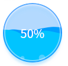

DWaterProgress Class
class Dtk::Widget::DWaterProgress可以使用 DWaterProgress 类快速创建圆形容器内水位高低指示进度的动画控件. More...
| Header: | #include <DWaterProgress> |
Public Functions
| int | value() const |
Public Slots
| void | setTextVisible(bool visible) |
| void | setValue(int value) |
| void | start() |
| void | stop() |
Signals
| void | valueChanged() |
Detailed Description

可以使用 DWaterProgress 类快速创建圆形容器内水位高低指示进度的动画控件。并提供了可选的是否显示进度文字的选项。 Use DWaterProgress to create an new water animation progress. There is also an optional progress text can be set as visible via setTextVisible().
Member Function Documentation
[slot] void DWaterProgress::setTextVisible(bool visible)
set progress text visible or not
设置是否显示进度
set the progress text value(like 50% when value is 50) visible. 设置进度文字是否显示，如值为 50 时显示 50% 。
[slot] void DWaterProgress::setValue(int value)
set the current progress value (range: 0~100)
设置当前进度值，（范围 0~100）
Note: Setter function for property value.
See also value().
[slot] void DWaterProgress::start()
star water animation.
开始水位动画
[slot] void DWaterProgress::stop()
stop water animation.
停止水位动画
int DWaterProgress::value() const
get the current progress value
当前进度值
Note: Getter function for property value.
See also setValue().